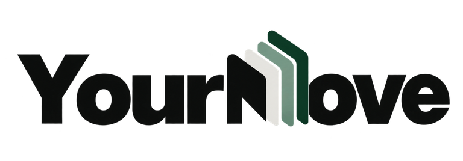

QUIET INK / THE EXISTING MARK, REFINED
Same character.
A clearer signature.
Three color treatments of the approved layered M and original YourMove lettering. Compare the full identity, then inspect how it holds up at everyday sizes.
Try in context00 / SOURCE OF TRUTH
What we’re carrying forward.
The integrated M, four stepped planes, rounded upper corners, sloped shoulders, and existing heavy lettering.

ORIGINAL PNG · 768 × 268 · TRANSPARENTOne raster source. No vector master found.
The wordmark studies below render this same PNG with tonal color mapping and tighter transparent bounds. Letter shapes, spacing, and M geometry are preserved.
Small marks are explicitly labeled optical reconstructions, drawn from the source’s four planes. They are proposals, not recovered original vectors.
01 / THREE DIRECTIONS
An identity, in light and ink.
Identical artwork and scale across treatments. The green in B is a brand signature; product actions remain Quiet Ink cobalt.
02 / EVERYDAY SCALE
The navigation test.
Original at the current CSS width; studies optically aligned to its visible width. No enlarged logo advantage.
Desktop: original 163px image box ≈ 153px visible artwork. Mobile: original 145px box ≈ 136px visible artwork. The study removes transparent padding; the lettering and internal proportions stay fixed.
03 / A MARK THAT SCALES
Four planes. Less surface detail.
Full source M at display size; flat, source-derived reconstruction for tiny icons. Every icon below is shown at its labeled CSS size.
The existing icon’s bevels, highlights, and shadows belong to the promotional treatment. At 16px, flat planes improve separation. The icon study retains the stepped silhouette instead of substituting a generic M.
04 / IN CONTEXT
A signature with a place.
Representative header and footer, plus documentation and journal mastheads. Existing site copy and Quiet Ink surfaces.
Showing B · Green signature
Real experience is enough work.
Applying shouldn't mean doing it all over.
DOCUMENTATION
Your experience.
Your application.
Your final say.
PRODUCT · ENGINEERING · JOB SEARCH
There’s more
to the story.
RECOMMENDATION / B · GREEN SIGNATURE
Keep the green.
Let cobalt do the work.
Graphite anchors the wordmark. Light cobalt connects its middle plane to Quiet Ink. The green rear plane carries forward a recognizable part of YourMove’s identity without competing with cobalt actions.
The dedicated dark treatment keeps the lettering white and the layers distinct. The flat M gives the same construction a more legible life at favicon size.
Review the three directions ↑05 / IMPLEMENTATION FINDINGS
Before anything ships.
Direction approval comes first. Production replacements and the final asset pack follow in a separate step.
Current placements
- 14 rendered routes, each with a header and footer wordmark.
- Shared navigation uses 163px / 145px image boxes; documentation uses 144px on mobile.
- Marketing, blog, and docs footers whiten the source with a CSS filter.
- Blog builds copy the homepage header and footer.
- All routes reference the same ICO; no touch icons or web app manifest are present.
Artwork and metadata
- The ICO contains 16px, 32px, and 48px raster frames.
- The default 1200 × 630 OG image embeds the identity in promotional artwork.
- The hackathon article has its own illustrated social image.
- Docs have no OG image; no explicit Twitter image override was found.
- No SVG, AI, EPS, PDF, or PSD logo master was found in the repository.
Source and preview limitations
Wordmarks and large M studies are live SVG filter treatments of the repository PNG. An SVG container does not make the embedded bitmap a vector master. Crop bounds are source pixels x=29…746, y=49…212; wordmark aspect and internal spacing are unchanged. The flatter four-plane M is a manual optical reconstruction for review. It needs final optical tuning after selection, especially at 16px and on high-density displays.
No final PNG, SVG, ICO, touch-icon, social-avatar, or OG pack is being exported at this stage. The current embedded promotional imagery remains a separate follow-up decision. See the local handoff for the audit and reproduction steps.